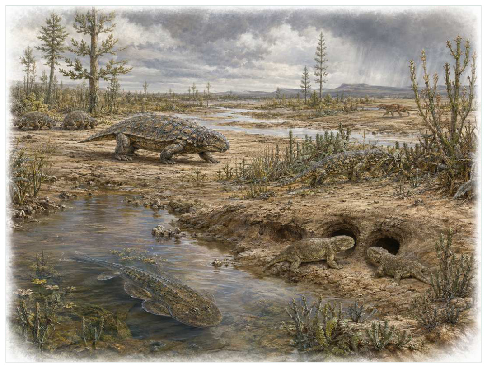

第09篇 · 二叠纪：恐龙以前的合弓类世界 · 第 31 章
盘古大陆的二叠纪生态：旱季、植物与被忽略的支系
本篇主题:二叠纪：恐龙以前的合弓类世界
盘古大陆上的干旱化、合弓类辐射和哺乳动物式结构的积累。

本章科学复原配图 （用于呈现结构与生态关系, 不替代化石照片、测量数据与系统发育证据。）
把时间拨到中二叠世至晚二叠世，约2.73亿至2.52亿年前。这一章不只列出当时的生物，而要追问环境、能量和生态关系怎样共同塑造身体。盘古大陆把大片内陆置于强烈季节性与干旱之下，但二叠纪并非单调荒漠。河谷、季节性湖泊、煤沼残余、温带种子蕨林和裸子植物林形成镶嵌。离片椎类两栖动物仍可成为大型捕食者，副爬行动物和早期双孔类探索植食、穴居与攀爬，合弓类只是其中最显眼的一部分。陆地生态已出现区域化，南方冈瓦纳与北方欧美大陆拥有不同植物和动物组合。
进入这个时代
若真正置身其中，首先感受到的是介质本身：水是否含氧、地面是否稳定、空气是否干燥、植被是否遮挡视线。身体结构只有放在这些条件中才有意义。在冈瓦纳河谷，舌羊齿类落叶形成厚层，二齿兽群在水源附近取食；更干区域里，耐旱种子植物和低矮灌木占优势。洪水过后，河道边出现短暂高生产力，随后漫长旱季迫使动物迁移、挖洞或降低活动。
在“盘古大陆的二叠纪生态：旱季、植物与被忽略的支系”所覆盖的时间里，不能把地理与气候当作固定背景。海陆位置、海平面、河流或植被结构会改变资源可达性，同一性状在不同地区可能得到完全相反的选择结果。
以盘古大陆的二叠纪生态：旱季、植物与被忽略的支系为例，化石记录偏爱硬组织、快速埋藏和容易出露的岩层。一次“首次出现”通常只是目前所知的最早记录，一次“突然消失”也需要排除保存窗口关闭。年代、形态和环境证据必须一起解释。在本章中，这一约束具体落在“季节性水源把动物活动集中到河谷并加强竞争”这条关系上。
再从中二叠世至晚二叠世，约2.73亿至2.52亿年前的时间尺度看，物种数量并不等于生态功能。一个群落即使仍有许多物种，只要初级生产、授粉、礁体建造或大型植食等关键功能消失，食物网也会表现为深度崩溃。反过来，少数机会型物种高丰度并不代表系统已经恢复。 它与“更耐旱的种子和花粉”共同决定了后续变化可以沿哪些路径发生。
生态系统如何运转
本章的一条关键关系是“季节性水源把动物活动集中到河谷并加强竞争”。它首先改变资源在个体之间的分配：能更早发现、处理或占据资源的种群获得收益，而另一方会承受新的选择压力。
围绕“季节性水源把动物活动集中到河谷并加强竞争”，这种关系没有永恒赢家。收益随密度和环境改变：防御越常见，攻击专门化的价值越高；资源越稀少，维持昂贵结构的代价越大。化石记录中的扩张与衰退，常是这种动态平衡被外部事件打破的结果。 对盘古大陆的二叠纪生态：旱季、植物与被忽略的支系而言，这一后果还会与“耐旱种子植物逐渐替代部分湿地孢子植物”相互放大或抵消。
“耐旱种子植物逐渐替代部分湿地孢子植物”体现了生态系统的反馈性。一方结构或行为稍有改变，另一方的防御、逃避、繁殖和空间选择就会重新排列，长期累积后才形成宏观演化差异。
围绕“耐旱种子植物逐渐替代部分湿地孢子植物”，它的长期后果通常通过幼体和繁殖体现。成年个体即使能抵抗一次危机，只要巢址、配子、幼体食物或成长季节被破坏，种群仍会在数代内下降。 对盘古大陆的二叠纪生态：旱季、植物与被忽略的支系而言，这一后果还会与“穴居、储脂与低质量植食成为应对内陆波动的策略”相互放大或抵消。
在中二叠世至晚二叠世，约2.73亿至2.52亿年前，“穴居、储脂与低质量植食成为应对内陆波动的策略”把环境条件转化为生物之间的差异。相同气候并不会平均影响所有支系，因为它们利用的食物、水层、底质和繁殖地点并不相同。
围绕“穴居、储脂与低质量植食成为应对内陆波动的策略”，还要考虑空间异质性。一项在浅海、河谷或林冠有效的策略，移到深水、干旱内陆或开阔地便可能失去优势。因此同一支系常出现区域性扩张，而不是全球同步取代。 对盘古大陆的二叠纪生态：旱季、植物与被忽略的支系而言，这一后果还会与“季节性水源把动物活动集中到河谷并加强竞争”相互放大或抵消。
关键演化创新
在“盘古大陆的二叠纪生态：旱季、植物与被忽略的支系”中，围绕“更耐旱的种子和花粉”，“更耐旱的种子和花粉”是本章的重要演化创新。创新并不等于某一代突然长出完整器官，它通常由旧结构的尺寸、连接、材料和表达时序逐步变化，并在每个中间阶段承担可用功能。 它首先需要在中二叠世至晚二叠世，约2.73亿至2.52亿年前的生态条件下产生可测量收益。
就“更耐旱的种子和花粉”而言，研究者通过近缘支系比较、发育同源、关节活动、微观组织和出现顺序重建这条路径。真正有价值的过渡化石不是“半成品”，而是证明中间组合可以独立生活。 本章把它与“大型植食者肠道发酵”并列，是为了显示复杂性状往往依赖多部分协同。
在“盘古大陆的二叠纪生态：旱季、植物与被忽略的支系”中，围绕“大型植食者肠道发酵”，这一结构的历史应按性状拆开。支撑、感觉、供能和控制往往不是同时成熟，化石会显示镶嵌状态：某一部分已接近后来的形态，其他部分仍保留祖征。它首先需要在中二叠世至晚二叠世，约2.73亿至2.52亿年前的生态条件下产生可测量收益。
就“大型植食者肠道发酵”而言，它的成功具有条件性。环境稳定时，专门化可提高效率；危机到来时，同一专门化可能限制食物和栖息地选择。演化创新因此既能开启辐射，也能制造新的脆弱性。 本章把它与“洞穴生态与季节性休眠”并列，是为了显示复杂性状往往依赖多部分协同。
在“盘古大陆的二叠纪生态：旱季、植物与被忽略的支系”中，围绕“洞穴生态与季节性休眠”，“洞穴生态与季节性休眠”是本章的重要演化创新。创新并不等于某一代突然长出完整器官，它通常由旧结构的尺寸、连接、材料和表达时序逐步变化，并在每个中间阶段承担可用功能。它首先需要在中二叠世至晚二叠世，约2.73亿至2.52亿年前的生态条件下产生可测量收益。
就“洞穴生态与季节性休眠”而言，这一变化还可能在多个支系中独立发生。若功能相似而解剖来源不同，就是趋同；若结构来自共同祖先但功能改变，则属于同源结构的分化。二者不能仅靠外观判断。 本章把它与“更耐旱的种子和花粉”并列，是为了显示复杂性状往往依赖多部分协同。
生命群像：把物种放回生态网络
舌羊齿（Glossopteris）
在二叠纪冈瓦纳，舌羊齿（Glossopteris）以约乔木或灌木级的身体参与食物网。它不是孤立的“明星生物”，而是南方森林的优势种子植物；舌形叶、耐寒季节性与广泛根系支撑高纬度森林决定它能利用哪些资源，也决定必须承担哪些成本。
对舌羊齿而言，同域物种的存在迫使它分割时间与空间。相似牙齿不一定吃完全相同的食物，相似四肢也可能适应不同底质；微磨损、同位素和伴生群落常能揭示这种细分。环境改变时，原本减少竞争的专门化又可能成为迁移和改食的障碍。 这使“舌形叶、耐寒季节性与广泛根系支撑高纬度森林”不能脱离其南方森林的优势种子植物角色来理解。
证据核心是叶、木材和种子器官在多大陆同现，是大陆漂移经典证据；整株分类仍包含多物种。化石记录更擅长回答“结构是什么”，较难回答“每天怎样行动”。足迹、胃内容物、咬痕或胚胎若存在，会显著缩小推测范围；若只有零散骨骼，行为叙述就必须更克制。
由舌羊齿这个案例看，它所代表的身体方案后来可能消失，也可能被远亲以不同材料重新发明。生命史因此既有可重复的功能解，也有不可复制的谱系路径。两者结合，才解释现代生物为何既熟悉又偶然。 它在二叠纪冈瓦纳留下的记录，因此同时是第31章所讨论的形态史和生态史的一部分。
锯齿龙（Scutosaurus karpinskii）
认识锯齿龙（Scutosaurus karpinskii）要先放弃静态骨架印象。它生活在晚二叠世，约约2.5至3米，日常任务是作为大型植食副爬行动物维持能量与繁殖。厚重身体、皮内成骨和短粗四肢适合处理低矮植被只是这一整套生活史中最容易化石化的部分。
对锯齿龙而言，它的成功不需要在所有性能上压倒其他物种，只需在特定资源和风险组合中留下更多后代。速度、咬合、装甲、感官与繁殖之间存在预算，某项性能极端化往往意味着另一项被牺牲。所谓“霸主”只是复杂权衡后的区域性结果。 这使“厚重身体、皮内成骨和短粗四肢适合处理低矮植被”不能脱离其大型植食副爬行动物角色来理解。
判断它的生活方式时，研究者首先使用俄罗斯大量骨架支持体型和食性，社会行为与迁徙主要来自群体埋藏推测。随后会检验替代解释：同样的牙是否也能处理其他食物，同样的骨骼比例是否由年龄造成，同一骨层是否来自群体生活还是灾难性聚集。排除过程比贴标签更重要。
由锯齿龙这个案例看，过去的复原常受完整现代动物模板影响，新材料则迫使研究者接受更陌生的身体比例或生活方式。最稳妥的表达是保留估计区间，并明确哪些软组织、颜色和社会行为仍属合理推测。 它在晚二叠世留下的记录，因此同时是第31章所讨论的形态史和生态史的一部分。
阔齿龙（Captorhinus aguti）
阔齿龙（Captorhinus aguti）生活在早二叠世，已知体型约为约30至40厘米。它在群落中的角色可概括为小型陆生杂食或植食爬行动物。最值得观察的结构是多排牙齿提高植物处理能力，展示植食在蜥形类中独立出现。这些结构不是为了后来时代而准备，而是在当时直接影响摄食、运动、防御或繁殖。
对阔齿龙而言，从种群角度看，偶发捕猎和个体伤病远不如长期繁殖率重要。广泛分布的普通个体比一具异常巨大的标本更能代表支系，然而普通个体往往较少进入公众叙事。研究者必须防止把化石收藏偏好误当成古代丰度。 这使“多排牙齿提高植物处理能力，展示植食在蜥形类中独立出现”不能脱离其小型陆生杂食或植食爬行动物角色来理解。
关于它的直接依据是：牙列和颌运动模型支持食性，物种内部牙排随成长变化。研究者还必须确认骨骼是否属于同一个体、是否被水流搬运、压扁是否改变比例，以及不同大小是否只是成长阶段。只有解剖、地层和功能证据相互一致，复原才可上调为高可信。
由阔齿龙这个案例看，它在生命史中的价值不在于离现代形态还有多远，而在于证明这一身体组合曾真实可行。即使没有直系后代，支系也可能在当时持续繁盛，并通过捕食、植食或栖息地工程改变其他生命的选择环境。它在早二叠世留下的记录，因此同时是第31章所讨论的形态史和生态史的一部分。
笠头螈（Diplocaulus magnicornis）
在这一章的生命群像里，笠头螈（Diplocaulus magnicornis）不能只当作图鉴名称。它出现于早二叠世，体型大约约1米，主要生活方式是淡水底栖或伏击型四足动物；回旋镖形头骨可能影响水动力、防捕食或显示则说明身体怎样围绕这一生活方式进行组合。
对笠头螈而言，把它放回群落后，结构的意义更清楚。食物并不会平均分布，水深、植被高度、底质和季节把资源切成小块；它的身体让其中一部分资源可被利用，也使它与近缘种错开生态位。种群命运还取决于幼体能否成长、繁殖地点是否稳定以及灾害后是否仍有避难所。 这使“回旋镖形头骨可能影响水动力、防捕食或显示”不能脱离其淡水底栖或伏击型四足动物角色来理解。
现有认识建立在头骨形态高可信，具体功能存在多模型；并非现代蝾螈近亲之上。古生物学的可信度不是来自一件戏剧化标本，而是来自多件标本、多个地点和不同方法得到相容结果。新发现若改变比例或分类，并非此前研究毫无价值，而是证据边界被重新画清。
由笠头螈这个案例看，从生态尺度看，它与本章其他成员共同维持一张网络。任何“最强”排名都会遗漏资源供应、幼体死亡、疾病和气候脉冲；真正决定长期成功的是种群能否在波动中不断完成繁殖。 它在早二叠世留下的记录，因此同时是第31章所讨论的形态史和生态史的一部分。
扁豪猪兽（Diictodon feliceps）
从外形看，扁豪猪兽（Diictodon feliceps）最容易被记住的是喙部、短躯干和成对洞穴显示对季节性环境的适应。它生活在晚二叠世，大小约约45厘米，承担穴居小型植食兽孔类这一生态功能。把年代、体型和功能放在一起，才能避免把奇特形态当成无意义装饰。
对扁豪猪兽而言，同域物种的存在迫使它分割时间与空间。相似牙齿不一定吃完全相同的食物，相似四肢也可能适应不同底质；微磨损、同位素和伴生群落常能揭示这种细分。环境改变时，原本减少竞争的专门化又可能成为迁移和改食的障碍。 这使“喙部、短躯干和成对洞穴显示对季节性环境的适应”不能脱离其穴居小型植食兽孔类角色来理解。
支持该解释的材料包括南非大量个体与螺旋洞穴关联支持穴居，成对保存不必然证明终生配偶制。若不同证据出现冲突，应优先报告范围而不是强行给出单值。例如体长会随参照类群变化，运动能力会随软组织假设变化，系统位置也会随新增性状重新计算。
由扁豪猪兽这个案例看，它也展示专门化的双面性：结构在稳定环境中提高效率，却可能在气候、食物或竞争格局突变时限制转向。灭绝不是对设计的道德评分，而是性状、地理范围和偶然事件相遇后的历史结果。 它在晚二叠世留下的记录，因此同时是第31章所讨论的形态史和生态史的一部分。
因果链：环境、生态与性状
从资源入口看，“季节性水源把动物活动集中到河谷并加强竞争”决定能量首先由谁获得，而“耐旱种子植物逐渐替代部分湿地孢子植物”决定能量随后怎样在群落中转移。只有当个体能够借助“更耐旱的种子和花粉”把资源转化为生长或后代时，形态优势才会成为种群优势。舌羊齿与锯齿龙分别展示了这条链上的不同位置：前者的舌形叶、耐寒季节性与广泛根系支撑高纬度森林使其偏向南方森林的优势种子植物，后者的厚重身体、皮内成骨和短粗四肢适合处理低矮植被则服务于大型植食副爬行动物。这并不意味着二者必然直接竞争；更常见的情况是，它们通过共享资源、改变栖息地或影响共同捕食者而间接连接。把这种间接作用纳入，才看得见盘古大陆的二叠纪生态：旱季、植物与被忽略的支系不是物种名单，而是一张持续重新分配能量的网络。
“穴居、储脂与低质量植食成为应对内陆波动的策略”说明环境不是在所有个体身上平均施力。若一个种群分布广、世代较短或能使用多种资源，它可能把一次局部危机吸收到地理和生活史差异之中；若另一个种群依赖狭窄水深、单一植物或特定繁殖场，平时高效的专门化就可能在变化中放大风险。锯齿龙和阔齿龙的差异可以用来提出这种比较，但不能仅凭外形宣布谁更适应。真正需要的是地层连续性、地区分布、年龄结构和伴生群落共同告诉我们，哪些性状在盘古大陆的二叠纪生态：旱季、植物与被忽略的支系的具体条件下转化成了更稳定的繁殖。
如果把盘古大陆的二叠纪生态：旱季、植物与被忽略的支系当作一次自然实验，可以追问：假如“季节性水源把动物活动集中到河谷并加强竞争”较弱，“大型植食者肠道发酵”是否仍会带来同样收益；假如“耐旱种子植物逐渐替代部分湿地孢子植物”更强，舌羊齿的舌形叶、耐寒季节性与广泛根系支撑高纬度森林是否反而成为负担。反事实无法直接验证，却能帮助研究者识别模型隐含的因果假设。随后再用古土壤、河流沉积和蒸发岩重建干湿变化和花粉与叶化石显示植物地理分区寻找可区分的预测：不同机制应在体型分布、损伤类型、沉积环境或出现顺序上留下不同痕迹。科学解释不是为现有图景编一个顺耳故事，而是让相互竞争的解释接受同一批材料检验。
“季节性水源把动物活动集中到河谷并加强竞争”与“穴居、储脂与低质量植食成为应对内陆波动的策略”之间常存在反馈。一个支系改变沉积、植被或猎物数量后，环境会对其自身和其他支系产生新的选择压力；短期收益可能导致长期资源下降，局部工程行为也可能创造此前不存在的栖息地。舌羊齿作为南方森林的优势种子植物，阔齿龙作为小型陆生杂食或植食爬行动物，即使从不直接相遇，也可能经由这种环境改造联系起来。生态系统因此不是静态背景上的竞赛场，而是参与者不断修改规则的动态结构；这正是解释盘古大陆的二叠纪生态：旱季、植物与被忽略的支系为何会留下长期后果的关键。
亲缘关系为功能解释设定边界。“洞穴生态与季节性休眠”若在近缘支系中以不同程度出现，最简解释通常是祖先已具备部分结构，后代分别强化或丢失；若远亲在相似生态位中出现相近功能，则需要检查内部解剖是否来自不同材料。舌羊齿与阔齿龙可用于演示这一区分：外形近似不自动证明近缘，外形差异也不否定深层同源。把系统发育树、年代和生态证据叠在一起，才能判断盘古大陆的二叠纪生态：旱季、植物与被忽略的支系中的相似究竟来自共同继承、趋同还是保留的原始特征。
时代横截面：个体、种群与证据
把舌羊齿与锯齿龙并排观察，可以看到同一时代并不存在唯一正确的身体方案。舌羊齿以舌形叶、耐寒季节性与广泛根系支撑高纬度森林参与南方森林的优势种子植物，锯齿龙则依靠厚重身体、皮内成骨和短粗四肢适合处理低矮植被承担大型植食副爬行动物；两者可能在食物尺寸、活动空间或时间上错开，从而降低直接竞争。若环境改变使这些维度重新重叠，原先共存的支系才可能发生更强替代。比较的目的不是判断谁更先进，而是识别每套结构在哪些条件下有效、在哪些条件下暴露成本。
尺度转换是盘古大陆的二叠纪生态：旱季、植物与被忽略的支系最容易被忽略的问题。舌羊齿的一次摄食、一次移动或一次繁殖属于分钟到季节尺度；种群扩张需要数百至数万年；“更耐旱的种子和花粉”在演化树上的固定则可能跨越更久。短期观察能够说明结构怎样工作，却不能单独解释支系为何在中二叠世至晚二叠世，约2.73亿至2.52亿年前扩张。反之，宏观多样性曲线能显示替换，却不能指出每次选择发生在什么身体和生活阶段。把尺度接起来，因果链才完整。
从失败的替代解释出发，能够看见研究如何推进。若把舌羊齿简单解释为南方森林的优势种子植物，就应检查其舌形叶、耐寒季节性与广泛根系支撑高纬度森林是否真的适合该功能；若另一种功能同样可行，再看磨损、同位素、沉积环境或共存生物能否区分。锯齿龙与阔齿龙提供了比较基线，帮助判断某一结构是普遍祖征、特殊适应还是成长阶段差异。结论不是从外观直觉跳出，而是在一系列被排除的可能性之后留下。
本章还可以作为灭绝选择性的预演。若危机首先削弱“季节性水源把动物活动集中到河谷并加强竞争”，依赖该环节的舌羊齿可能比外形更脆弱但食物广泛的锯齿龙更早衰退；若危机破坏的是繁殖场或幼体环境，成年体型和武器几乎不能提供保护。分布范围、成熟速度、休眠能力与食谱因此要和舌形叶、耐寒季节性与广泛根系支撑高纬度森林、厚重身体、皮内成骨和短粗四肢适合处理低矮植被等显眼结构一起评估。危机筛选的是整套生活史，而不是单项竞技能力。
从保存角度看，舌羊齿和锯齿龙也可能被化石记录不公平地对待。舌羊齿的舌形叶、耐寒季节性与广泛根系支撑高纬度森林若包含坚硬、容易辨认的部分，就更可能被采集和命名；锯齿龙若身体柔软、个体小或生活在侵蚀环境，真实丰度可能被严重低估。古土壤、河流沉积和蒸发岩重建干湿变化能补充一部分信息，花粉与叶化石显示植物地理分区又提供另一尺度的限制。只有先问“什么容易被保存”，再问“什么当时常见”，才不会把博物馆展柜的比例误当成古生态比例。
科学家为什么这样判断
证据条目“古土壤、河流沉积和蒸发岩重建干湿变化”的作用，是把肉眼可见的化石转化为可检验结论。研究者先确认样品的层位和成岩历史，再测量结构、比较近缘种并建立替代模型；若解释只在一套参数下成立，就不能写成唯一事实。
使用“花粉与叶化石显示植物地理分区”时必须处理保存偏差。坚硬组织、低氧埋藏和火山灰覆盖更容易留下记录，岩层出露与采集历史又决定样本数量。统计分析通常要校正这些不均匀性，避免把采样强度当作真实多样性。
围绕“洞穴痕迹和骨骼聚集揭示避难行为”，高可信结论通常来自独立方法一致。例如形态暗示某种食性时，微磨损、同位素或胃内容物若给出相同方向，解释便更稳固；若结果冲突，就应保留生态弹性或地区差异。
在“盘古大陆的二叠纪生态：旱季、植物与被忽略的支系”这一问题上，把上述方法合在一起，研究者才能从残缺材料走向受约束的复原。任何一条证据都可能受到成岩、污染、样本量或现代类比的限制；结论越具体，越需要多条独立证据指向同一方向，并与中二叠世至晚二叠世，约2.73亿至2.52亿年前的地层背景相容。
过去的图景与今天的证据
将二叠纪描述成‘恐龙前的荒凉时代’忽视了高度复杂的陆地群落。全球气候模型表明盘古内陆季节反差强烈，但纬度、海拔和季风使区域差异很大。某些动物是否群居迁徙、是否在洞中度过旱季，多属于痕迹和群体埋藏支持的主流解释，而非直接观察。
围绕“盘古大陆的二叠纪生态：旱季、植物与被忽略的支系”，这里的争论并非一方相信科学、另一方拒绝科学，而是不同材料对模型的约束力度不同。旧结论可能建立在少量标本或错误现代类比上，新技术增加性状后会改变最合理解释。修正是研究正常运行的结果。
对中二叠世至晚二叠世，约2.73亿至2.52亿年前的材料而言，旧复原并不总是彻底错误。它可能正确抓住亲缘或基本功能，却在姿势、比例和生态上被新标本修订。比较“过去认为”和“现在更支持”，能看见证据如何逐层替换想象。
跨尺度观察
能量账本：任何大型身体、快速运动或高代谢都必须由初级生产支撑。食物从生产者进入消费者时会损失大量能量，因此顶级捕食者种群必然远少于猎物。环境变化若先削弱生产端，高营养级通常最早出现繁殖失败；这比单次搏斗更能决定支系命运。在“盘古大陆的二叠纪生态：旱季、植物与被忽略的支系”中，这一尺度具体连接了“季节性水源把动物活动集中到河谷并加强竞争”与“更耐旱的种子和花粉”，因而不能只从单个成年标本判断。
偶然与必然：流体力学、材料强度和能量转换使某些功能解反复出现，显示演化有可预测部分；但由哪一支系先获得变异、谁恰好位于避难地，又带有不可复制的历史偶然。现代世界是二者叠加的结果。 在“盘古大陆的二叠纪生态：旱季、植物与被忽略的支系”中，这一尺度具体连接了“耐旱种子植物逐渐替代部分湿地孢子植物”与“大型植食者肠道发酵”，因而不能只从单个成年标本判断。
证据等级：地层年代和硬组织形态通常最强，食性若有多种独立线索可达主流解释，颜色、群居、求偶和叫声则常停留在合理推测。把等级写清并不会破坏画面，反而让读者知道想象可以走到哪里。 在“盘古大陆的二叠纪生态：旱季、植物与被忽略的支系”中，这一尺度具体连接了“穴居、储脂与低质量植食成为应对内陆波动的策略”与“洞穴生态与季节性休眠”，因而不能只从单个成年标本判断。
通向下一个时代
从本章走向下一阶段时，需要保留的不是一串物种名，而是一个因果链：环境改变可用能量与栖息地，生态关系筛选性状，性状又反过来改造环境。这个已经适应季节性压力的世界仍无法承受二叠纪末的多重环境冲击。危机并不是把一片简单荒漠再度变坏，而是摧毁了成熟的陆海生态网络。
本章精选来源
- [R49] Reisz, R. R. Origin of dental occlusion in tetrapods: signal for terrestrial vertebrate evolution? Journal of Experimental Zoology B 306B, 261-277 (2006).
- [R50] Kemp, T. S. The Origin and Evolution of Mammals. Oxford University Press, 2005.
- [R51] Rubidge, B. S. & Sidor, C. A. Evolutionary patterns among Permo-Triassic therapsids. Annual Review of Ecology and Systematics 32, 449-480 (2001).
- [R52] Luo, Z.-X. Developmental patterns in Mesozoic evolution of mammal ears. Annual Review of Ecology, Evolution, and Systematics 42, 355-380 (2011).